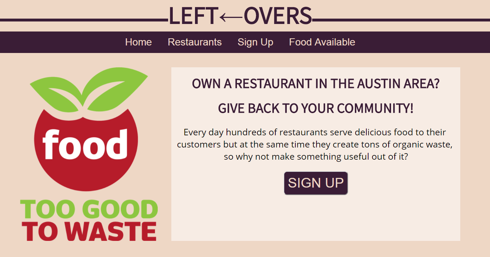
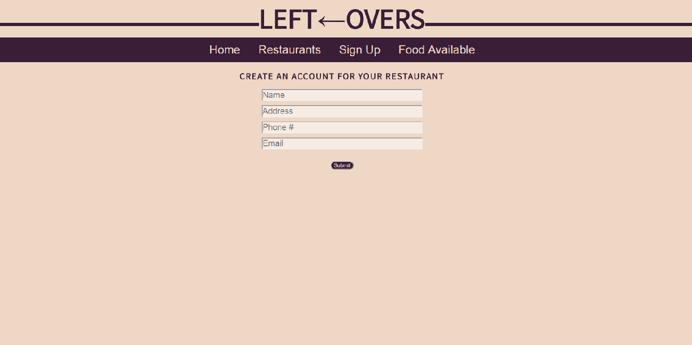

I'm a web developer with a keen eye for the visual spectrum and a sound mind for developing on the back end. Developing useful and practical applications in Javascript is a growing passion for me and I love working on projects with other like-minded developers. Being a former nationally touring musician, I have channeled interpersonal communication and creative energy into my web development skills in order to work effectively with teams in an efficient manner.
Making web apps for friends and family is my passion.
I toured nationally with Nadis Warriors as a producer, guitarist, and keyboard
player, occasionally playing on stage with renowned visual artist, Alex Grey.
I help oversee a team of food and customer service professionals at
the popular San Marcos, TX restaurant.
This is an app for people learning music theory and ear training. It displays commonly used scales and chords in notation and plays a corresponding mp3s for the user in order for them to associate sound with theoretical music notation. Uses: HTML, CSS, Javascript, React, React Dom, React Scripts
  Click Here To Visit The Site GitHubA web app providing a resource to restaurants that want to distribute extra food products they can no longer sell to their communities, as well as way for users to locate leftover food from those restaurants. Uses: jQuery, Node, JavaScript, HTML, CSS, Mongo DB, Express, ES6, AJAX, Mongoose, JSON